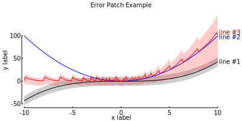

Examples¶
First example¶
import datura
datura.plot([[1, 2, 3], [1, 2, 3]], [[0, 1, 3], [1, 2, 5]], yus=None, yls=None,
filename='first_example.svg', x_label='my x label', y_label='my y label',
title='my title', labels=['good', 'better'], x_ticks=[1, 2, 3],
y_ticks=[0, 2, 4])
Displaying error patches¶
import datura
labels = ['line #1', 'line #2', 'line #3']
label_nudges = [0, -2, 5]
x1 = [xx*.1 for xx in range(-100,101)]
xs = [x1, x1, x1]
y1 = [(xx*.035)**3 for xx in range(-100,101)]
y2 = [(xx*.1)**2 for xx in range(-100,101)]
y3 = [int(str(xx**10)[:1]) + int(xx>0)*(xx*.1)**2 for xx in range(-100,101)]
ys = [y1, y2, y3]
yu1 = [y+10 for y in y1]
yl1 = [y-10 for y in y1]
yu2 = y2 # this is a bit of a hack
yl2 = y2
yu3 = [y*1.3+5 for y in y3]
yl3 = [y*.5-10 for y in y3]
yus = [yu1, yu2, yu3]
yls = [yl1, yl2, yl3]
datura.plot(xs, ys, yus=yus, yls=yls, filename='error_patch_example.svg',
x_label='my x label', y_label='my y label', title='my title',
labels=labels, label_nudges=label_nudges, x_ticks=[-5, -10, 0, 5, 10],
y_ticks=[-50, 0, 50, 100])

error_patch_example.svg